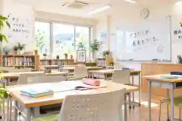

英語に親しみながら、耳と口を育てるグループレッスン。

SPEAK
・
SMILE
・
SMILE
50
MIN.
MIN.
LISTEN→SPEAK→PLAY→CONNECT→LISTEN→SPEAK
02 / EXPERIENCE
「話せた！」が、
次の一歩になる。
外国人講師との会話を中心に、聞く・話す・伝えるを自然に繰り返します。レベルに合わせて無理なく続けられるから、英語がもっと身近になります。
大人の学び直しも、自分のペースで。会話を楽しみながら続けられます。
目的や課題に合わせて、集中して学びたい方へ。

03 / LESSON
約50分を、
まるごと体験。
01外国人講師
02オリジナル教材
03レベル別
無料の受講相談・英語力診断も用意。今のレベルと目的から、無理のない学び方をご提案します。
04 / TICKET
通い方まで、
自由に。
3 MONTHS¥18,00012チケット
6 MONTHS¥52,38036チケット
12 MONTHS¥85,56060チケット
05 / START
まずは、
Hello!から。
無料相談・英語力診断で、今のレベルを一緒に確認します。
無料相談・英語力診断 ↗